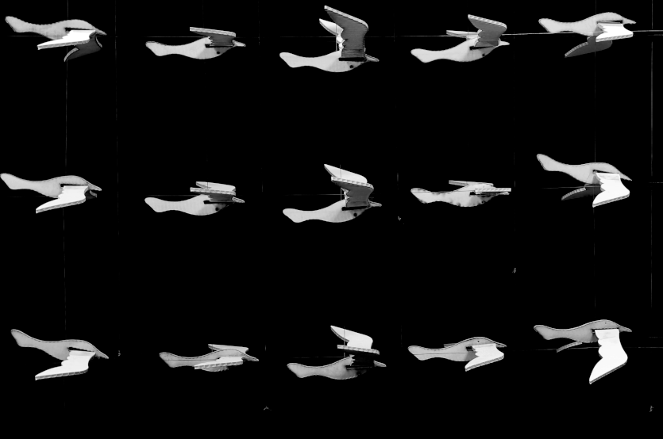

The hashtag "#KiyiyaVuranInsanlik" ("Humanity washed ashore") made it to Twitter's top world trending topics after the image was widely shared. This picture became the symbol of the tragedy of refugees.

We created a few sketches for ideation to identify various ways in which we could set up the installation and analyzed the value and feasibilty of the various ideas as a team.
The final idea is an installation of white birds that arranged in a sequence similar to formations in which birds fly in a flock. The idea was to generate movement in the birds in the form of flapping of wings when someone tweets about the ongoing refugee crisis.
To design the kinetic sculpture, we went though several iterations of:he shape of the bird wings, the stability of the birds:, structural robustness of the sculpture, and the types of motion we could achieve:

This culminated in this small-scale model of our vision:
We experimented with various patterns of motion.
The target audience for this sculpture is not specific, but includes anyone who could be willing to open their hearts to the refugee crisis. Set along a pathway in front of an apartment building on Fifth Avenue in Pittsburgh, the sculpture is nestled into its residential environment and offers subtle passive interactions to the residents of the building as they enter or exit their homes, and to people walking on the sidewalk along 5th Ave. The gentle flapping of bird wings as well as the sign along the pathway we hope will invite passersby into a more intimate interaction with our installation. The location of the installation, although set in a semi-private area, is easily accessible from the sidewalk. A combination of plaques installed near the adjacent bus stop and near the installation serves to inform people about purpose of the sculpture and its interactions.

The sculpture, designed to reside in an urban locale of Pittsburgh, tries to engage the passersby and residents of the area to communicate awareness about the on-going refugee crisis. Gentle wing flapping movement of the birds passively invites the passersby. The plight of refugees as they struggle to move towards a better future is depicted in this slow flapping motion of birds as if they are struggling to take flight. A plaque displays the intent of the sculpture and guides the viewers to engage actively by sending a tweet message to the refugees. Viewers can tweet their message of encouragement for the refugees and include the provided tag #flighttofreedom. Such active engagement is rewarded by increased momentum and speed of wing movement. Also, the person receives a story about refugee survival, as a gratitude for their encouragement and empathy.

We used DC motors and a pulley system to control the motion of the birds. Each column of birds had a pulley at both ends, with a loop of fishing line going around them and attached to the body of the birds. There were 6 rows of fishing lines going through the wings of the birds, 2 on either side for each of the 3 rows to keep them constrained. Thus, with the clockwise and anti-clockwise motion of the motors connected to the pulley system, the bodies of the birds were pulled up and down while the wings pivoted at their midpoints, resulting in the desired flapping motion.

To reverse the direction of the DC motors, we needed to be able to reverse the direction of the current in the motor. We used a H-bridge circuit for this purpose. http://itp.nyu.edu/physcomp/labs/motors-and-transistors/dc-motor-control-using-an-h-bridge/